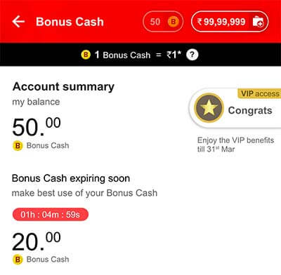

- Explore Fantasy
- Leagues
- Blogs
- Offers & Promotions
- Testimonials
Help Desk
1. How to play the My11Circle game?
- Go to ‘Matches’ > ‘Upcoming’.
- Pick a match and create your fantasy team using the 100 credit points in your kit.
- If you are new to the world of fantasy games and want to explore it, join our ‘Practice’ contests. Here, you do not have to pay an entry fee. Play for free and challenge other contestants.
- If you want to win prize money, discover various contests such as Mega, Beat the Expert, Beat the Score, Head to head etc.
- You can also create your own Private contest and invite your friends and family to test their skills.
- Your fantasy team will start earning points once the match goes live. Check progress in the ‘Live’ tab.
- Your final score will be updated once the match is over. Go to ‘Matches’ > ‘Completed’ to check your team’s points and rankings.
- The amount you win depends on the performance of players chosen by you, and it will reflect in your My11Circle account after 4 hours of the match being in completed state.
- To withdraw any cash from your account, go to:
- My11Circle
- My Account
- Withdraw Cash
2. What are the rules to create a team?
- Create your Fantasy Team by selecting 11 players with the help of the 100 credit points.
- You can select a maximum of 7 players (Cricket & Football) and 5 players (Kabaddi) from one squad. Let’s say, there’s a match between India and Australia: if you select 7 players from India, you can draft in only 4 players from Australia or vice versa.
- Cricket: You can select 1 to 4 Wicket Keepers, 1 to 6 Batsmen, 1 to 6 All Rounders and 1 to 6 Bowlers.
- Football: You can select 1 Goalkeeper, 3 to 5 Defenders, 3 to 5 Midfielders and 1 to 3 Forwards.
- For matches that go live from 17th October 17:00 IST onwards, this will change to 1 to 2 Goalkeepers, 1 to 6 Defenders, 1 to 6 Midfielders and 1 to 4 Forwards.
- Among the players in your chosen XI, you can assign a captain and a vice-captain.
- Kabaddi: You can select 1 to 2 Goalkeepers, 1 to 6 Defenders, 1 to 6 Midfielders and 1 to 4 Forwards.
3. What is the importance of a captain and vice-captain?
The captain and vice-captain you choose for your team are the ones you predict to be the best and second-best players of the match respectively. While the captain bags twice the points for his performance, the vice-captain earns 1.5 times the points.
Put your analytical skills to good use to earn these bonus points.
4. How to create multiple teams?
- Select the match you created your fantasy team for.
- Go to ‘Create New Team’ at the bottom and create multiple teams.
- Go to ‘Upcoming Matches’ and select a match you’d like to play for.
- Scan through various contests, such as:
- Cash contests
There are various types of contests that help you win cash prizes: Mega, Beat the Expert, Beat the Score, Head to head etc.
These contests have a fixed entry fee designed by our management team. Although you can create teams for free, you’ll have to pay an entry fee when you join a contest. For example, you have to pay three entry fees if you join a contest with three teams.
You can also create cash private contests (under ‘Private Contests’) and compete amongst your friends.
It is you who decides the entry fees and cash prizes for the Private contests.
- Practice contests
If you are new to the world of fantasy games and want to explore it, you may play the Practice contests. Here, you do not have to pay an entry fee. Play for free and see your ranking amongst the best of the fantasy players.
6. Information available for each contest?
Here’s what you need to know to join our contests:
- Total winnings
Total winnings for a particular contest is distributed among the winners who are finalised on the basis of their rankings.
- Winners
This is the total number of proposed winners in a contest. The number of winners is directly proportional to the number of teams joining the contest.
- Entry fee
This is the entry fee which needs to be paid to join a contest. The entry fee can be cash, ticket, or free.
- Prize breakup
This is the prize that is distributed depending on the ranks achieved by the teams. Once a match goes live, the prize breakup is updated based on the number of teams that have joined the contest.
- Teams joined/Contest Size
This indicates the number of teams that have joined the contest on a real time basis, also displaying the maximum number of teams allowed to join the contest.
- ‘G’ - Guaranteed symbol
This symbol indicates whether a contest is guaranteed or not. If a contest is guaranteed, it means that the prize for a particular rank is guaranteed, although the number of prizes vary as and when more teams join the contest.
7. How points are assigned to players in Cricket?
Points assigned to a player depends on his performance in a match. Let’s consider the fifth ODI between India and West Indies that was played on November 1, 2018.
Ravindra Jadeja is assigned the captain, meaning his points (56) are doubled. He took 4 wickets for 34 runs in 9.5 overs. He earned 48 points for his 4 wickets, 2 bonus points for a 4-wicket haul, 2 points for being in the playing XI, 2 bonus points for a maiden over, and 2 bonus points for maintaining an economy between 3 and 4.5.
Virat Kohli scored 33 runs off 29 balls, including 6 fours. He earned 16.5 points for his 33 runs, 3 bonus points for 6 fours, 1 bonus point for maintaining a strike rate between 100 and 149.9, and 2 points for being in the playing XI. He also took a catch, for which he gets 4 points. In all, he earned 26.5 points.
To understand the point system, check our Fantasy Cricket Points System.
8. How points are assigned to players in Football?
In Fantasy Football, points are scored by each player as per their performances in the live match. Let’s take an example of the match between Liverpool and Manchester United:
- Alisson is assigned as a captain, meaning his points (62) are doubled:
He played for 90 mins → 4 pts.
He had 1 assist → 10 pts.
He completed 30 passes → 3 pts.
He did not concede any goal and got a clean sheet → 15 pts.
He made 6 crucial saves → 30 pts. - Salah is assigned as a vice-captain, meaning his points (58.5) are multiplied 1.5 times:
He played for 90 mins → 4 pts
He scored 1 goal → 15 pts
He completed 20 passes → 2 pts
He got a Yellow Card → -2 pts
He had 4 shots on goal in total → 20 pts
- Fred is neither a captain nor a vice-captain, so his points remain the same as his actual score:
He played for 54 mins → 2 pts
Completed 60 passes → 6 pts
He had 2 shots on goal → 10 pts
9. How are points assigned to players in Kabaddi?
In Fantasy Kabaddi, points are scored by each player as per their performance in the live match. Let’s take the example of a match, Mumbai vs Haryana:
Abhishek Singh earned a total of 50 points and since he was selected as captain, his score became 100 points (2x). He earned 4 points for being in the playing 7, 32 points for performing 8 successful raids, 16 points as raid bonus, 4 points for one super raid, -4 points for four unsuccessful raids and -2 for a green card.
Vikas Khandola earned a total of 51 points and since he was selected as vice-captain, his score became 76.5 points (1.5x). He earned 4 points for being in the playing 7, 24 points for performing 6 successful raids, 12 points as raid bonus, 12 points for 3 super raids, -2 points for 2 unsuccessful raids, 5 points for a super 10 and -4 points for a yellow card.
10. How is the winner decided?
- Winning positions are decided on the basis of ranks achieved by various teams. The ranks are finalised on the basis of points accumulated by teams.
- For example, consider the following contest details:
Total winnings - ₹3,00,000
Contest Size - ₹200
Winners - ₹100
Entry Fee - ₹2000 - Prize breakup:
Rank 1: ₹1,00,000
Rank 2: ₹60,000
Rank 3: ₹20,000
Rank 4-10: ₹5,000
Rank 11-100: ₹1,000
Once a contest is closed, the prize breakup is recalculated on the basis of the number of teams that have joined the contest. For this example, let’s consider the maximum teams allowed to join the contest.
Once the match finishes, all the teams that had joined will have a fixed rank on the basis of the points they have accumulated.
So, if you had joined this contest and your team achieved a rank between 1 and 100, you are a winner and the amount committed in the prize breakup corresponding to your rank is your winning amount.
Please note that cash prize and rankings are different for different contests.
How do I withdraw cash?
- You can Withdraw Cash at any time by going to My Account page and clicking on Withdraw Cash.
- You are then asked to enter an amount you would like to withdraw.
- You can only withdraw an amount less than or equal to your Withdrawable Balance. This will be shown to you on the Withdraw Cash page.
- For making a withdrawal, you need to be ID verified. If you are not ID verified, then on placing a withdrawal request you shall be prompted to upload the latest copy of ID proof. Our customer service team will review and verify your uploaded document. You can also get yourself ID verified by uploading ID proof document from Profile section under My accounts.
A TDS certificate will be provided to you 3 months from the winning date, on your registered email address.
What is the minimum amount I can withdraw?
Minimal withdrawal amount is ₹100.
What is the maximum amount I can withdraw?
You can withdraw all the money in your Withdrawable Account at any time. The balance in your Withdrawable Account includes all your cash winnings, any bonuses you earned as a cash player as well as any deposited amount you have used for playing cash games.
What are Deposit and Withdrawable Accounts and how is the balance in each account calculated?
If you are a cash player on My11Circle, your cash account balance is divided into two Accounts - Deposit Account and Withdrawable Accounts.
Your Deposit Account balance consists of all the amount you have deposited but have not yet played cash games for. Your Withdrawable Account balance includes all your cash winnings, as well as any deposited amount you have used for playing cash games. Every time you play a cash game, the amount used to play that game is credited to your Withdrawable Account.
The Deposit Account balance and the Withdrawable Account balance together make your total Cash balance. You can play cash games on My11Circle with any amount up to your total Cash balance.
Let us see some examples. Assume that your Deposit Account balance is ₹100 and your Withdrawable Account balance is ₹400 (total balance = ₹500) . You make a deposit of ₹50 in My11Circle.
The entire deposit is credited to your Deposit Account. Thus, your Deposit Account balance is now ₹150 ( ₹100 + ₹50) and your Withdrawable Account balance remains at ₹400. Your total balance is ₹550.
You play a contest
Let us say you play a cash contest with an entry fee of ₹100 and win ₹500. The ₹500 that you won becomes a part of your Withdrawable Account. ₹100 is deducted from your Deposit Account as entry fees. Thus, your Deposit Account balance will now be ₹0 ( ₹100 - ₹100) and your Withdrawable Account balance will now be ₹900 ( ₹400 + ₹500). Your total Balance is ₹900.
You claim a Bonus
Let us say you claimed a Bonus Chunk of ₹50. This will be credited to your Withdrawable Account. Thus, your Withdrawable Account balance is now ₹450 ( ₹400 + ₹50) and your Deposit Account balance remains at ₹100. Your total balance is ₹550.
How can I view my Deposit and Withdrawal Account balance?
You can see your Account Balances in Account Overview under My Accounts.
- a) All payments are sent through Online Transfer facility
In case of payments through the Online Transfer facility:
- You just need to provide your Bank Account Number and MICR code in order to enable us to process your withdrawal by the online transfer facility. In addition to these if you also provide your IFSC code, Bank Name and Branch Area, we will be able to process your withdrawal much faster. All these details are only to be provided once as from your next withdrawal request, these details shall be auto-filled.
- We process Online Transfers on all days except Sunday and Bank Holidays. In case you have provided your IFSC code, Bank Name and Branch Area while placing a withdrawal request, you will receive the withdrawn amount credit within 1-3 days of placing your withdrawal request else it may take up to 5-7 days to credit into your bank account.
- Minimal withdrawal amount
The minimum amount you can withdraw at any time is ₹100.
- TDS Deductions
As per law, tax deduction at source (TDS) may be applicable on your winnings. TDS is currently applicable at the rate of 30% on winning above ₹10,000 and the rate of TDS and/or the exemption limit are subject to changes from time to time as required by law.
For example:
- Suppose you participate in a contest with ₹100/- entry fee and win ₹12,000/- in that contest.
- Since your net winning in that contest is ₹11,900/- (₹12,000/- minus ₹100/-) which is greater than ₹10,000/-, a TDS of 30% will be applicable of the net winning amount (₹11,900/-) and will be deducted from the winning amount (₹12,000/-).
- ₹3,570/- (₹11,900 x 30%) will be deducted from your winning amount and your account will be credited with ₹8,430/- (₹12,000/- minus ₹3,570/-).
- A TDS certificate will be provided to you 3 months from the winning date, on your registered email address.
- If you have an amount less than ₹100 and would like to withdraw, please send us an email at support@My11Circle.com.
What are the recommended system requirements?
To have a smooth fantasy game playing experience at My11Circle.com, we recommend the following requirements:
Your Computer
Our games are designed to run on any reasonably modern computer without the need to install additional hardware or software. In case you have any doubts or are having trouble playing on My11Circle, please check if your computer conforms to the minimum configuration below:
- CPU - Pentium 4 and above is recommended.
- RAM - 512MB is recommended.
- Screen Resolution - 1024x768 is recommended.
- Please ensure that your Internet connection conform to the recommendations below.
- Flash Player 9 or greater should be installed on your computer.
What internet connection is required?
For the best gaming experience on My11Circle, you need a fast internet connection. Your computer should be able to connect and download all game-related data from our servers quickly and reliably. We recommend a high-speed broadband connection of 256 Kbps and above, with little or no packet loss and low latency to our servers.
In case you face such a problem of degradation of playing experience, we recommend that you try playing again after 15 to 20 minutes.
We also recommend that if you are playing from a cyber cafe or otherwise sharing an internet connection with others; if so, ensure that no more than 4 people are logged in to My11Circle simultaneously.
PLEASE NOTE THAT THE QUALITY OF INTERNET CONNECTION REQUIRED FOR PLAYING MULTIPLAYER GAMES ONLINE IS HIGHER THAN THAT REQUIRED FOR BROWSING, CHATTING, AND EMAILING, AMONG OTHERS.
What are Firewall and Port requirements?
My11Circle's games are offered on TCP port 443. Your firewall needs to allow unfiltered access to this port.
Why am I getting error message "internet connection lost", "trying to reconnect"?
This message is seen due to intermittence in your internet connection.
How do I transfer the prize money into my bank account?
Go to ‘My11Circle’ > ‘My Account’ > ‘Withdraw Cash’.:
You can only withdraw an amount less than or equal to your withdrawable balance.
How long will it take for money transfer?
The duration it takes for the withdrawal request to be processed and get credited to your Bank A/c depends on the mode of transaction. We have two modes for processing withdrawals. Visit Withdraw Cash page for more details.
Why doesn’t my prize money reflect in my account?
The prize money reflects within 4 hours of the match being concluded. However, the winners are announced the next morning for matches that end late night.
What if there’s a tie between contestants?
The prize money will be equally distributed between tied contestants.
For example, if there’s a tie between two players in a contest of prize money ₹10,000, the tied players will get ₹5,000 each.
Can I change my team name?
The name of your team is your unique identity on My11Circle and hence cannot be changed. This helps us assess your performances.
Can I play if I am under the age of 18?
No, you have to be 18 or above to play My11Circle.
Why was my money refunded?
We refund your money within 24 hours when a contest is cancelled. This happens only if the match is called off or the contest does not gather the required number of contestants.
A match can be called off without a ball bowled or sometimes even after the start of play due to rain, dangerous pitch, among other reasons.
How will I know if I have won a prize money?
Depending on your points and ranking of a contest, your winnings will be credited automatically to your My11Circle account.
When do I get the result of a contest?
Based on the scorecard, our team will verify and update the points and rankings within a couple hours after the match. Please note that this process may take long to ensure accuracy.
What if I do not withdraw my prize money?
Your prize money remains safe with us.
Can I join a contest once the match starts?
No, player can join the contest till the match starts.
Can I leave a joined contest?
No, you cannot leave a contest after joining.
BONUS CASH FAQ
What is Bonus Cash?
Bonus Cash is a new reward currency introduced by My11Circle. You can earn this by simply joining contests on My11Circle.
You can use it to buy amazing boosters or for joining contests with discounts.
What is the value of Bonus Cash?
1 Bonus cash is equal to ₹1.
Note that Bonus Cash cannot be withdrawn and can only be used to join contests on My11Circle or buy boosters.
What can I do with Bonus Cash?
You can spend your earned Bonus Cash in 2 ways:
- Purchasing Boosters (Winning Multiplier)
- You will find certain contests in our games with the option to buy boosters. These boosters help to multiply your winning amount by 2x, 3x, 4x or 5x.
- To pay entry fee on Contest Join
- You will be able to pay the entry fee for all the contests partly using Bonus Cash.
NOTE: The feature "To pay entry fee on Contest Join" is currently unavailable. Keep playing My11Circle for more updates on this.
How long can I keep my Bonus Cash?
Each Bonus Cash comes with validity. You have to use Bonus Cash before it expires. You can check its expiry on the Bonus Cash main page.

What is a booster?
Booster is like a superpower you can unlock using your Bonus Cash. We are currently offering 4 boosters: 2x Multiplier, 3x Multiplier, 4x Multiplier and 5x Multiplier. You can apply this on any team in the applicable contest and it will multiply your winnings. For example, if you apply a 3x Multiplier on a team and it wins ₹100, we will give you 3 x ₹100 = ₹300.
All the boosters come with a cap on the max payout, which can be seen on the contest detail screen.
What happens when a contest joined partially with Bonus Cash gets abandoned?
When a contest gets abandoned, the amount of Bonus Cash you have spent to join that contest will be returned to you. You will be able to see this amount of Bonus Cash in your balance after the contest abandonment process has been completed.
What if the contest on which I applied the booster gets abandoned?
When a contest gets abandoned, the Bonus Cash you spent on any booster in that contest will get refunded back to you. You will be able to see this amount of Bonus Cash in your balance after the contest abandonment process has been completed.
Can I remove a booster I have applied to a team?
Once a booster is applied to a team in a contest, you cannot remove it. However, you can always switch your team. The booster will then be applied to the newly switched team.
How much Bonus Cash can I use for joining a contest?
The amount of Bonus Cash you can use for joining a contest can be seen on the contest card.
How can I apply a booster?
The contests on which you can apply boosters will have a visible marker on the card itself.
If you have enough Bonus Cash to buy the booster, you will be able to see it during contest join confirmation. You can also apply the booster on any joined team through a contest detail card.
What is a VIP plan?
VIP is a special plan for our most elite users. You can become a VIP by playing for ₹1,500 in a calendar month. As a VIP, you enjoy a host of benefits across My11Circle, such as Higher Multiplier on the Beat the Expert contest, Pay 15% entry fee using Bonus Cash, etc. The full list of benefits is available on the VIP main page and can be varied by us from time to time.
Once you become a VIP, you can keep on enjoying the benefits for the remaining part of that month as well as the following month.
Terms and Conditions
- Bonus Cash & VIP program are our brand new loyalty & rewards program that truly rewards you for playing on My11Circle. In this new program, you earn rewards every time you play.
- By playing for ₹1,500 in a calendar month, you can unlock the VIP benefits. These benefits stay with you for the remainder of the month plus next month.
- Read on, to know the terms associated with the new Bonus Cash & VIP program:
- Redemption of Bonus Cash: Redemption of Bonus Cash can be discontinued or the terms of redemption can be modified at any time without any liability to My11Circle. My11Circle's decision regarding the same shall be final and binding.
- VIP benefits: the VIP program and benefits associated with them can be discontinued or the terms thereof can be modified at any time without any liability to My11Circle. My11Circle's decision regarding the same shall be final and binding.
- Expiry of Bonus Cash & VIP program: the Bonus Cash and VIP program shall expire as per the terms and conditions prescribed in the FAQs and subject to modification at any time without any liability to My11Circle.
- Information Updates: All email communication for Bonus Cash & VIP program will be sent from: Please add these IDs to your safe senders list.
- This program does not entitle you to any privileges other than those stated in the Bonus Cash & VIP program sections on the website.
- The Terms of My11Circle are applicable to all services offered on My11Circle.com. Any violation of the Terms at any stage may result in disqualification from Bonus Cash & VIP program, forfeiture of rewards and such other action by My11Circle as may be deemed necessary as per the Terms.
How can I host a Private contest?
- Go to ‘Matches’ > ‘Upcoming’
- Select the match for which you want to host a private contest
- Now click on ‘Private contest’ button to reach the private contest creation page
- By default, values for setting the private contest is already provided, you may modify them based on your requirement
- Click on the “create” button and your private contest is ready
- Share the unique link with your friends to invite them on your private contest
- You can also join the private contest hosted by yourself by clicking on ‘Join Contest’ button
How can I share the private contest I created with my friends?
- Once the private contest is created successfully, you will be redirected to the invite page
- On this page, you can see the option to share the invite code through different mediums such as Whatsapp, SMS or any other sharable medium (using ‘more’ option)
- You can share the unique link for your private contest on any of the mediums
- You friends can click the shared link and join your private contest anytime before the start of the match
- You can also invite your friends by going to the “My contest” section on the contest lobby for the match
How can I join a private contest?
- If you have received an invite for a private contest, you can simply join it by clicking on the unique link in the invite message
- If you have received an invite code, you can copy it and paste in the ‘Join Private Contest’ page available under the ‘More’ menu
- You will see the details of the match and the private contest that you have been invite for, you can join by clicking on the ‘Join’ button
- After joining, you can share the invite link with more of your friends
I am getting an error when I am trying to join a private contest through the invite code or invite link
- You can join a private contest only before the start of the match
- So the match for which you are entering the invite code may already have been started
What are the rules of Private contest?
- All the game rules for the private contest are the same as that of the regular contest
Still have any query? Plesae contact us